×
Titre du Projet
Sous-titre
Détails du projet...
Etudiant en Data Science | Stagiaire Data Analyst.
Je m'appelle Ely Mouthon, j'ai 20 ans et je suis originaire de Lorient. Très attaché à mes racines et à la culture bretonne, j'évolue actuellement en deuxième année de BUT Science des Données à Niort. Ce cursus me permet de transformer mon intérêt pour l'analyse et la logique en une expertise technique concrète, tout en affirmant mon identité au sein du paysage académique régional.
Ma passion pour les nouvelles technologies liées à la data s'exprime aujourd'hui dans mon rôle de stagiaire Data Analyst à l'EPSM Sud Bretagne, au centre hospitalier Charcot. Cette expérience professionnelle me permet d'appliquer mes connaissances dans un univers exigeant, avec la volonté constante de rester à la pointe des innovations de mon secteur pour apporter des solutions pertinentes et modernes.
Au-delà du monde numérique, je cultive une soif constante de progression à travers la pratique intensive de la course à pied et du trail. Ce goût pour l'endurance et la performance se traduit par des objectifs ambitieux, comme le tour de l'île de Groix que je prépare actuellement. Cette détermination à parcourir de grandes distances reflète mon état d'esprit : une persévérance à toute épreuve, que ce soit sur les sentiers côtiers ou dans la gestion de projets complexes.
Télécharger mon CV

⚠️ Tous les projets de la première année ne sont pas disponibles et ne sont pas téléchargables. Seule une petite partie des projets réalisés est présentée ici.
PYTHON / SQL
RSTUDIO / EXCEL
RShiny - Application web interactive
QGIS - Analyse géospatiale
Formation NSI - Lycée Jean Macé
Streamlit - Dashboard multipage
Dashboard VBA
Séries temporelles
📅 Projets de la troisième année indisponibles pour le moment (actuellement en 2ème année)
SQL, R, Rshiny, RMarkown
Sous-titre
Détails du projet...